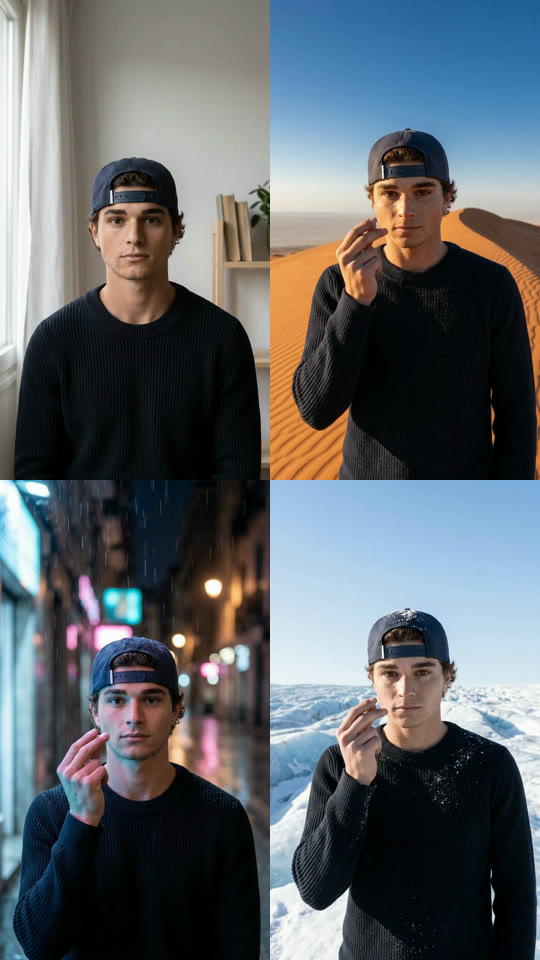
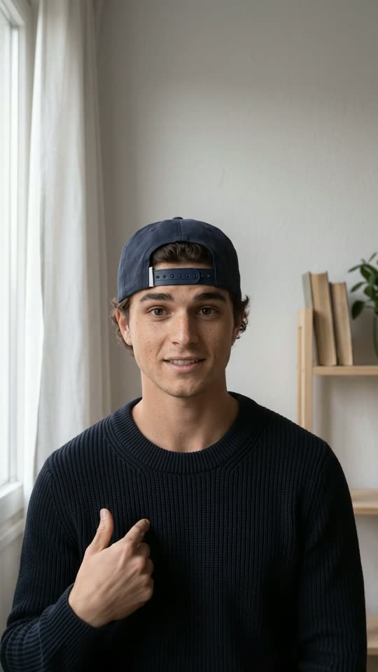
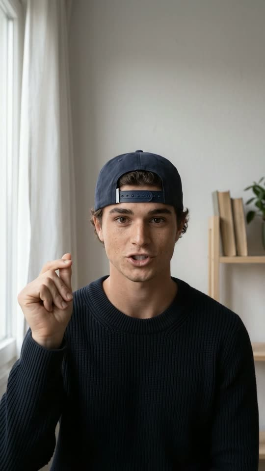
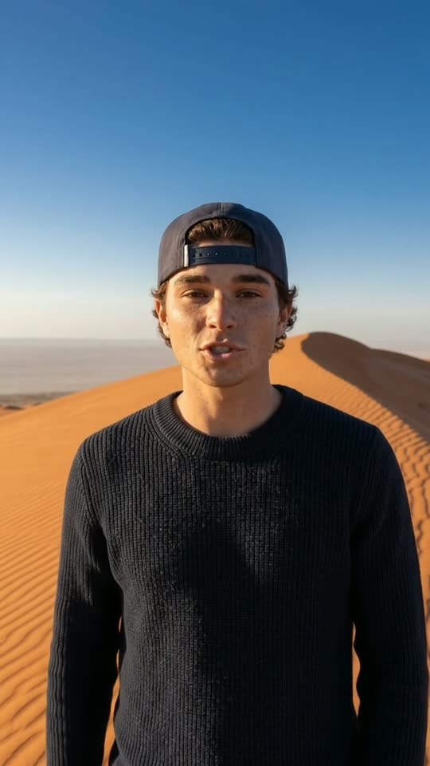
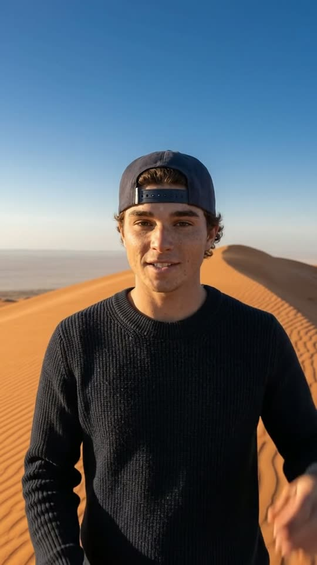
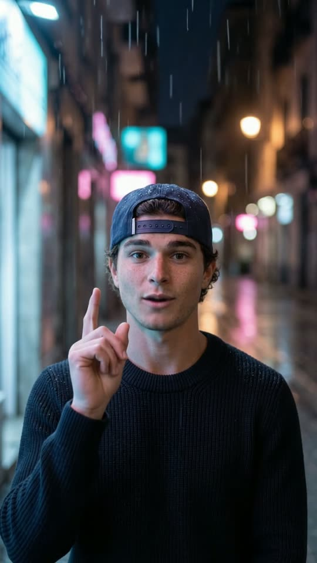
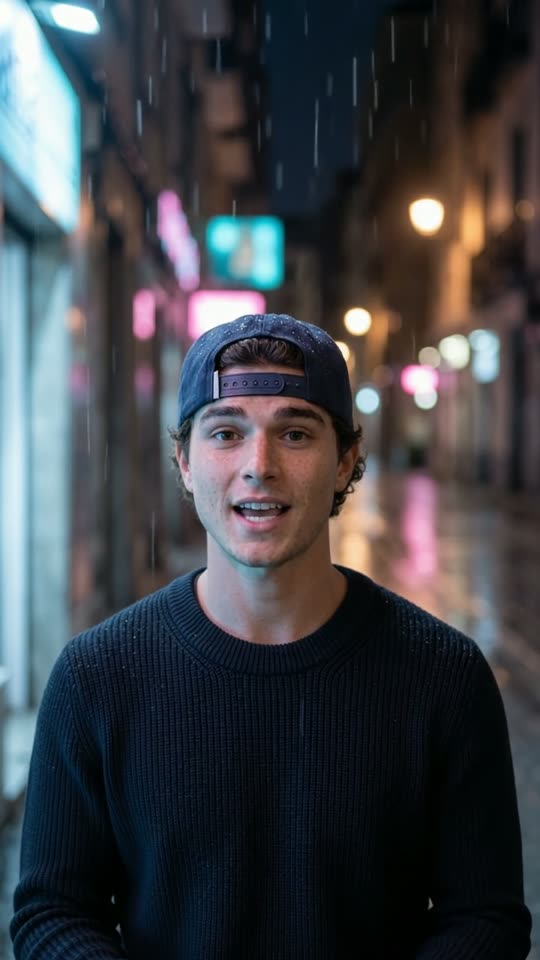
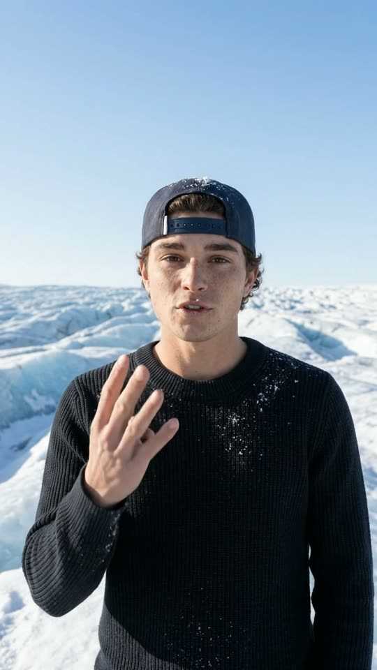
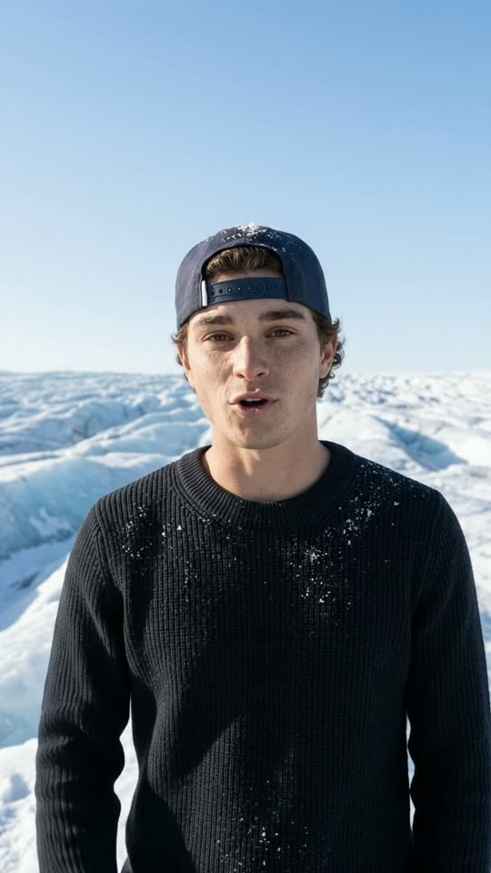

Free prompt pack · all of it
One snap.Four worlds.
That's not my room, and that's not me. It's my avatar, made from one photo, and four 8-second clips from Google Flow. 48 of the 50 credits Flow gives you free every day. Claude wrote every prompt, second by second.
Here's every prompt, ready to copy. Each prompt is behind a raised hand. Snap it: flick the thumb down, fast. Tap the background to snap to the next world.
Three new places, one pose
Images cost zero credits. Start from one photo of your avatar in a room. Attach it and make the other worlds: the same man, the same framing, and his right hand already up at his cheek, as if he has just snapped.
Watch out
The dune came out with the wrong hand up. The fix: attach the glacier photo instead and change only the place. The photo that already matches is the best reference.

The prompt 424 words
STREET AT NIGHT (attach the room photo) Use the reference photo for the man: the same face, light freckles, brown eyes, curly chestnut-brown hair, the navy-blue baseball cap worn backwards with its plastic strap across his forehead, and the same dark knit jumper. Same framing as the reference: chest-up, centred, eyes straight into the lens at eye level. His right hand is raised at the height of his right cheek, fifteen centimetres out from his face, palm toward the lens, thumb and middle finger pressed together as if he has just snapped them. He now stands in a narrow city side street at night in steady rain, raindrops beading on his cap and shoulders, the wet street behind him melted into soft round bokeh of pink, cyan and amber light. Cool neon glow from frame-left on his cheek. Natural skin with pores, real knit texture, crisp candid photograph. GLACIER (attach the room photo) Use the reference photo for the man: the same face, light freckles, brown eyes, curly chestnut-brown hair, the navy-blue baseball cap worn backwards with its plastic strap across his forehead, and the same dark knit jumper. Same framing as the reference: chest-up, centred, eyes straight into the lens at eye level. His right hand is raised at the height of his right cheek, fifteen centimetres out from his face, palm toward the lens, thumb and middle finger pressed together as if he has just snapped them. He now stands on a wide glacier on a clear morning, blue-white ice ridges and fresh snow stretching behind him under a cloudless pale blue sky, a few snow crystals on his cap and jumper. Bright cold sunlight from frame-left. Natural skin with pores, real knit texture, crisp candid photograph. DUNE (attach the glacier photo, so the pose and framing stay identical) Keep everything in the reference photo exactly as it is: the same man, the same face and freckles, the navy-blue cap worn backwards with its strap across his forehead, the same dark knit jumper, the same pose with his right hand raised at his cheek in the snap, the same chest-up framing, eye level and distance. Change only the place and the light. He now stands on the crest of a vast sand dune at golden hour, rippled orange sand falling away behind him to a pale hazy horizon under a deep blue sky. Low warm sun from frame-left lights his cheek and the cap. His cap and jumper are clean and dry. Natural skin with pores, real knit texture, crisp candid photograph.
The hook
Attach the room photo. Video, Ingredients, 9:16, 720p, 8 s. He talks from 0.4 to 6.4 seconds and snaps at 7.0. Every gesture is tied to a word.
- 0.4 sA glance at the room
- 1.6 sPoints at his chest on "me"
- 3.6 sOne finger on "one"
- 6.4 sThe hand rises
- 7.0 sThe snap
Watch out
Twenty-one words in six seconds is the limit. More than that and the snap gets pushed out of the clip.
Fragments


The prompt 582 words
FORMAT Real footage seen as the finished exported video file: the full picture edge to edge, nothing on top of it. The video runs at 24 fps. No frame is repeated. Real time, 1x speed, never slow motion. One continuous take, no cuts, no transitions, no change of place. REFERENCE Use the reference image for the man, his clothing, his raised hand and the place. His face matches the reference exactly: zero drift, no smoothing. THE MAN Early twenties, curly chestnut-brown hair, light freckles across the nose and cheeks, brown eyes, faint stubble on the jaw, a navy-blue baseball cap worn backwards with its plastic strap across his forehead, a dark knit jumper. VOICE Bright male voice in the upper-mid tenor register, forward and light; quick, casual conversational tempo; European accent with a light Spanish inflection; warm and confident, like a voice note to a friend. He never shouts and never whispers. Close and clean. THE SNAP His right hand, on frame-left, rises to the height of his right cheek, fifteen centimetres out from his face, palm toward the lens. Thumb and middle finger press together and he snaps them once: one sharp dry click, the middle finger landing on the base of the thumb. After the snap the hand stays exactly there, still, fingers relaxed. CAMERA Locked off at his eye level, 80 cm in front of him, chest-up framing, his face in the upper-middle of the frame. The camera does not move at all: it never pushes in, never pulls back, never pans, never orbits, never zooms, never cuts away. LOCATION His room, as in the reference: warm lamp light, the wall 1.5 m behind him soft and out of focus. FIRST FRAME Exactly the reference: chest-up, centred, eyes on the lens, both hands down out of the frame, lips just parting. ACTION TIMING 0-0.4 s: a quick breath in, eyebrows up, already looking into the lens. 0.4-1.6 s: first sentence; a small glance to frame-right at the room and straight back to the lens. 1.6-3.6 s: second sentence; a slow shake of the head, then he points at his own chest with his left index finger on the word me, and lowers the hand. 3.6-5.8 s: third sentence; eyebrows up on the word avatar, he lifts one finger of his left hand on the word one. 5.8-6.4 s: he says the last word, leaning five centimetres toward the lens. 6.4-7.0 s: his right hand rises into the snap position. 7.0-7.2 s: THE SNAP, once. 7.2-8 s: the hand stays raised and still; small closed-mouth grin, eyes on the lens. Hold to the last frame. LOOK Natural colour, real skin with pores and fine stubble, real knit texture, soft fine grain, sharp on the eyes. No camera app interface: no record button, no icons, no timer, no frame lines. LOCKS Only this one man in the frame, nobody behind him. Both hands have five fingers and keep their shape. No music, no score, no narration, no subtitles, no captions, no on-screen text, no watermark, no logos. No letters or numbers anywhere in the frame. AUDIO Exactly one speaker. He says, once, in order: "Okay, this is my room. Except it isn't, and this isn't me either. It's my avatar, made from one photo. Watch." He says nothing else before or after the line; short natural pauses only at the full stops. Then one sharp dry finger snap at 7.0 seconds. Nobody else speaks. Under his voice, quietly: soft room tone.
Same face, new world
Attach the dune photo. Same settings. It starts with the hand still up and lowers it. The last clip ended on that exact pose, so the cut lands on the snap.
- 0 sThe hand lowers
- 0.4 sOpen palm on "image"
- 2.4 sTouches the cap on "cap"
- 4.8 sA shrug on "trick"
- 7.0 sThe snap
Watch out
On the word "image" Omni wrote the word on his jumper for half a second. Tie a gesture to a word and it may print the word.
Fragments


The prompt 624 words
FORMAT Real footage seen as the finished exported video file: the full picture edge to edge, nothing on top of it. The video runs at 24 fps. No frame is repeated. Real time, 1x speed, never slow motion. One continuous take, no cuts, no transitions, no change of place. REFERENCE Use the reference image for the man, his clothing, his raised hand and the place. His face matches the reference exactly: zero drift, no smoothing. THE MAN Early twenties, curly chestnut-brown hair, light freckles across the nose and cheeks, brown eyes, faint stubble on the jaw, a navy-blue baseball cap worn backwards with its plastic strap across his forehead, a dark knit jumper. VOICE Bright male voice in the upper-mid tenor register, forward and light; quick, casual conversational tempo; European accent with a light Spanish inflection; warm and confident, like a voice note to a friend. He never shouts and never whispers. Close and clean. THE SNAP His right hand, on frame-left, rises to the height of his right cheek, fifteen centimetres out from his face, palm toward the lens. Thumb and middle finger press together and he snaps them once: one sharp dry click, the middle finger landing on the base of the thumb. After the snap the hand stays exactly there, still, fingers relaxed. CAMERA Locked off at his eye level, 80 cm in front of him, chest-up framing, his face in the upper-middle of the frame. The camera does not move at all: it never pushes in, never pulls back, never pans, never orbits, never zooms, never cuts away. LOCATION The crest of a vast sand dune at golden hour, as in the reference: rippled orange sand falling away behind him to a pale hazy horizon and a deep blue sky. Low warm sun from frame-left. A light steady wind lifts a few grains off the ripples behind him and moves the loose curls under the cap. FIRST FRAME Exactly the reference: chest-up, centred, eyes on the lens, his right hand already raised at the height of his right cheek, thumb and middle finger just snapped together. ACTION TIMING 0-0.4 s: his raised right hand lowers smoothly and leaves the bottom of the frame. 0.4-2.4 s: first sentence; he opens his left palm toward the lens on the word image. 2.4-4.8 s: second sentence; a small nod on each "same", then he touches the brim of the cap at the back of his head once with his left hand on the word cap, and lowers it. 4.8-6.6 s: third sentence; a short half-smile and a small shrug on the word trick. 6.6-7.0 s: lips close; his right hand rises back into the snap position. 7.0-7.2 s: THE SNAP, once. 7.2-8 s: the hand stays raised and still; small closed-mouth grin, eyes on the lens. Hold to the last frame. LOOK Natural colour, real skin with pores and fine stubble, real knit texture, soft fine grain, sharp on the eyes. No camera app interface: no record button, no icons, no timer, no frame lines. LOCKS Only this one man in the frame, nobody behind him. Both hands have five fingers and keep their shape. No music, no score, no narration, no subtitles, no captions, no on-screen text, no watermark, no logos. No letters or numbers anywhere in the frame. AUDIO Exactly one speaker. He says, once, in order: "Every world starts as one still image. Same face, same cap, and my hand already up. That's the whole trick." He says nothing else before or after the line; short natural pauses only at the full stops. Then one sharp dry finger snap at 7.0 seconds. Nobody else speaks. Under his voice, quietly: steady desert wind hissing over the sand, a few grains ticking.
Second by second
Attach the street photo. Same settings. The same blocks, word for word: the man, the voice, the snap, the camera. Only the place, the first frame, the timing and the sound change.
- 0.4 sTwo taps in the air
- 2.4 sTwo fingers to his lips
- 3.8 sEyebrows up on "eyebrows"
- 5.4 sEyes narrow, half a smile
- 7.0 sThe snap
Watch out
No music and no extra words: the AUDIO block says one speaker, one line, once.
Fragments


The prompt 636 words
FORMAT Real footage seen as the finished exported video file: the full picture edge to edge, nothing on top of it. The video runs at 24 fps. No frame is repeated. Real time, 1x speed, never slow motion. One continuous take, no cuts, no transitions, no change of place. REFERENCE Use the reference image for the man, his clothing, his raised hand and the place. His face matches the reference exactly: zero drift, no smoothing. THE MAN Early twenties, curly chestnut-brown hair, light freckles across the nose and cheeks, brown eyes, faint stubble on the jaw, a navy-blue baseball cap worn backwards with its plastic strap across his forehead, a dark knit jumper. VOICE Bright male voice in the upper-mid tenor register, forward and light; quick, casual conversational tempo; European accent with a light Spanish inflection; warm and confident, like a voice note to a friend. He never shouts and never whispers. Close and clean. THE SNAP His right hand, on frame-left, rises to the height of his right cheek, fifteen centimetres out from his face, palm toward the lens. Thumb and middle finger press together and he snaps them once: one sharp dry click, the middle finger landing on the base of the thumb. After the snap the hand stays exactly there, still, fingers relaxed. CAMERA Locked off at his eye level, 80 cm in front of him, chest-up framing, his face in the upper-middle of the frame. The camera does not move at all: it never pushes in, never pulls back, never pans, never orbits, never zooms, never cuts away. LOCATION A narrow city side street at night in steady rain, as in the reference: raindrops beading and running on his cap and shoulders, the wet street behind him melted into soft round bokeh of pink, cyan and amber light. Cool neon glow from frame-left. The rain falls straight down the whole time. FIRST FRAME Exactly the reference: chest-up, centred, eyes on the lens, his right hand already raised at the height of his right cheek, thumb and middle finger just snapped together. ACTION TIMING 0-0.4 s: his raised right hand lowers smoothly and leaves the bottom of the frame. 0.4-2.4 s: the first part of the line; he taps his left index finger in the air twice, once on each repeated word. 2.4-3.8 s: the second part; he touches his lips once with two fingers of his left hand. 3.8-5.4 s: the third part; he lifts both eyebrows high on the word eyebrows and lets them drop. 5.4-6.6 s: the last part; his eyes narrow slightly, a half-smile. 6.6-7.0 s: lips close; his right hand rises back into the snap position. 7.0-7.2 s: THE SNAP, once. 7.2-8 s: the hand stays raised and still; small closed-mouth grin, eyes on the lens, rain dripping off the peak of the cap at the back. Hold to the last frame. LOOK Natural colour, real skin with pores and fine stubble, real knit texture, soft fine grain, sharp on the eyes. No camera app interface: no record button, no icons, no timer, no frame lines. LOCKS Only this one man in the frame, nobody behind him. Both hands have five fingers and keep their shape. No music, no score, no narration, no subtitles, no captions, no on-screen text, no watermark, no logos. No letters or numbers anywhere in the frame. AUDIO Exactly one speaker. He says, once, in order: "Then one prompt, second by second: every word I say, when my eyebrows move, and the exact moment I snap." He says nothing else before or after the line; short natural pauses only at the commas. Then one sharp dry finger snap at 7.0 seconds. Nobody else speaks. Under his voice, quietly: steady rain hissing on wet asphalt, drops tapping on the cap, a car passing far away.
The last snap
Attach the glacier photo. Same settings. The last snap cuts back to the room. Whoever doesn't scroll watches it again from the start.
- 0.4 sCounts four fingers
- 2.0 sShakes his head on "no camera"
- 3.4 sPoints at you on "comment"
- 7.0 sThe snap
Watch out
The snap you hear in the reel is real, from the room and the dune clips. The street and the glacier didn't make the sound, so I laid it in.
Fragments


The prompt 609 words
FORMAT Real footage seen as the finished exported video file: the full picture edge to edge, nothing on top of it. The video runs at 24 fps. No frame is repeated. Real time, 1x speed, never slow motion. One continuous take, no cuts, no transitions, no change of place. REFERENCE Use the reference image for the man, his clothing, his raised hand and the place. His face matches the reference exactly: zero drift, no smoothing. THE MAN Early twenties, curly chestnut-brown hair, light freckles across the nose and cheeks, brown eyes, faint stubble on the jaw, a navy-blue baseball cap worn backwards with its plastic strap across his forehead, a dark knit jumper. VOICE Bright male voice in the upper-mid tenor register, forward and light; quick, casual conversational tempo; European accent with a light Spanish inflection; warm and confident, like a voice note to a friend. He never shouts and never whispers. Close and clean. THE SNAP His right hand, on frame-left, rises to the height of his right cheek, fifteen centimetres out from his face, palm toward the lens. Thumb and middle finger press together and he snaps them once: one sharp dry click, the middle finger landing on the base of the thumb. After the snap the hand stays exactly there, still, fingers relaxed. CAMERA Locked off at his eye level, 80 cm in front of him, chest-up framing, his face in the upper-middle of the frame. The camera does not move at all: it never pushes in, never pulls back, never pans, never orbits, never zooms, never cuts away. LOCATION A wide glacier on a clear morning, as in the reference: blue-white ice ridges and fresh snow stretching behind him under a cloudless pale blue sky, a few snow crystals on his cap and jumper. Bright cold sunlight from frame-left. A faint puff of breath shows in the cold air each time he speaks. FIRST FRAME Exactly the reference: chest-up, centred, eyes on the lens, his right hand already raised at the height of his right cheek, thumb and middle finger just snapped together. ACTION TIMING 0-0.4 s: his raised right hand lowers smoothly and leaves the bottom of the frame. 0.4-3.4 s: first sentence; he counts on his left hand, four fingers up on the word four, then a small shake of the head on the words no camera. 3.4-6.6 s: second sentence; he points one finger of his left hand at the lens on the word comment, then lowers it, eyebrows up on the word every. 6.6-7.0 s: lips close; his right hand rises back into the snap position. 7.0-7.2 s: THE SNAP, once. 7.2-8 s: the hand stays raised and still; small closed-mouth grin, eyes on the lens. Hold to the last frame. LOOK Natural colour, real skin with pores and fine stubble, real knit texture, soft fine grain, sharp on the eyes. No camera app interface: no record button, no icons, no timer, no frame lines. LOCKS Only this one man in the frame, nobody behind him. Both hands have five fingers and keep their shape. No music, no score, no narration, no subtitles, no captions, no on-screen text, no watermark, no logos. No letters or numbers anywhere in the frame. AUDIO Exactly one speaker. He says, once, in order: "Four worlds, twelve credits each, and no camera at all. Comment worlds and I'll send you every prompt." He says nothing else before or after the line; short natural pauses only at the full stops. Then one sharp dry finger snap at 7.0 seconds. Nobody else speaks. Under his voice, quietly: cold wind brushing across the ice, snow creaking under his feet.
Rule 01
End where the next one starts
AI didn't make the transition. Every world starts with the hand already up, the pose the last clip ends on. That's a cut on action.
Rule 02
Count the words
About 2.8 words a second, and leave a second and a half free for the snap. If the line eats the time, the snap never happens.
Rule 03
Same blocks, every clip
The man, the voice, the snap and the camera are written the same, word for word, in all four. The model has no memory: repeat it, don't refer to it.
That's every prompt
Your turn.Snap somewhere.
Tomorrow the credits come back, whether you used them or not. Make something with today's. If yours works, send it over. I read every DM.
@martiifons